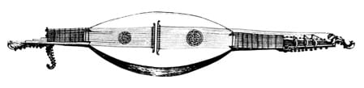
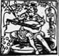

Contents
Preface
Introduction

Contents
Preface (11-14)
Introduction (17-18)
PART I
MEASURE AND INSTRUMENT MAKING BEFORE THE 18th century
I-1 Preliminary remarks
The role of resources in creation (23-24)
I-2 Concepts connected with the notion of measurement
2.1 Unit and number (25)
Continuous and discrete quantity (25-26)
2.2 What is a difference ratio and a measurement of magnitude? (26-27)
2.3 Proportionality (28)
Means (28-29)
Arithmetic proportion (30)
Geometric proportion (30-31)
Harmonic proportion (31)
2.4 Proportional sections (31-33)
2.5 The symmetrical properties of proportional sections (34-37)
I-3 The measurement of magnitudes in past recipes
3.1 Three examples of recipes from Vitruvius,
Henri-Arnaut de Zwolle and Mathias Roriczer (38-41)
3.2 The myth of the Golden Number (41)
3.3 Proportional geometric drawings and their approximations by number (42-43)
3.6 Approximations and the construction of sequences of converging ratios (43-45)
The geometric progression
The harmonic progression
The subharmonic progression
3.7 The analogical principle and the substitution of measurements (45-47)
I-4 Analysis of measurements in a 15th century technical drawing
4.1 Henri-Arnaut de Zwolle's lute (48-50)
4.2 Drawing the outline: first proportional relations (50-52)
4.3 How proportion generates measurements (52-53)
4.4 The position of the soundhole (54-55)
4.5 The relative nature of the plan (56)
PART II
DESIGN AND OUTLINE OF THE FORMS OF THE VIOLIN FAMILY
II-1 Preliminary remarks
The difficulties of analysing measurements (41)
II-2 Antonio Stradivari's violin moulds
2.1 Relations between the main dimensions of the forms (62)
2.2 Vertical relations (65-68)
2.3 Horizontal relations (68-72)
2.4 Height relations (72-73)
2.5 The length of the neck, the position of the bridge,
the length of the string (73-77)
2.6 Relations between the three dimensions (77-79)
II-3 The proportional archetypes of the violin family
3.1 The square and the organic conception of form (80-81)
3.2 Definition and organisation of the surface (81-83)
3.3 Analogical measurements and an archetypal division in Vitruvius (84-86)
3.4 Some examples of frameworks (86-100)
II-4 Drawing with a compass
4.1 Drawing curves and the principle of the section (101-103)
4.2 Scotia and the reverse curve (103-104)
Drawing a scotia (104-105)
Drawing a reverse curve (105-106)
4.3 Three problems and their solutions (106-111)
4.4 The characteristics of violin curves (112-113)
II-5 Seven models
5.1 Outline of a violin form by Andrea Amati (114-129)
5.2 Andrea Amati violin outline: analysis and commentary (130-138)
5.3 Form of a violin by the Amati brothers (139-147)
5.4 Amati brothers outline: analysis and commentary (148-151)
5.5 Form of an alto viola by Giacomo Gennaro (152-161)
5.6 Form of an alto viola by Andrea Guarneri (162-171)
5.7 Form of a tenor viola by Andrea Guarneri (172-181)
5.8 Form of a cello by Joseph filius Andrea Guarneri (182-191)
5.9 Form of a cello by Domenico Montagnana (192-202)

PART III
Late-period applications of proportionality
III-1 Preliminary remarks
Of arms and legs (207-208)
III-2 Stradivari's inheritance and particularities
2.1 Production of forms and changes in ways of taking measurements (209-216)
2.2 The Turn of the Scroll (217-220)
2.3 Stradivari's proportional principles for placing f-holes (221-223)
2.4 How to draw Stradivari's forms (224-231)
2.4.1 Mould MS 1 MB (232-233)
2.4.2 Mould MS 2 S (234-235)
2.4.3 Mould MS 28 SL (236-237)
2.4.4 Mould MS 21 PG (238-239)
2.4.5 Mould MS 49 G (240-241)
Conclusion (245-246)
Glossary (249-251)
List of subscribers (252-253)
Selected bibliography (254-255)